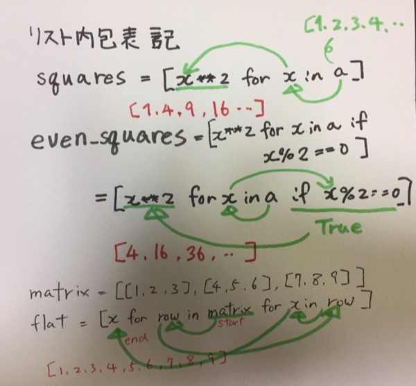

鉄は熱いうちに打て
=============================
Effective Pythonで学ぶ（項目７〜）¶
2017-12-03
昨日までのあらすじ¶
Effective Python を真面目に読もうと思ったので読みはじめました。
1章 Python流思考（Pythonic Thinking）¶
項目 7：mapやfilterの代わりにリスト内包表記を使う¶
項目 8：リスト内包表記には、 3つ以上の式を避ける¶
内包表記をはじめてみたときはなんじゃこりゃ？と思いましたが、慣れると便利ですね。
ネストがあまり長くなったり、結果が大きい場合は気をつけようねって書いてありました。
項目 9：大きな内包表記にはジェネレータ式を考える¶
ジェネレータ式 って便利ですね。
内包表記と同じように書くのを括弧で囲むそうです。便利だ
>>> greetings = ['Good Morning', 'Hello', 'Good Night']
>>> it = (len(x) for x in greetings)
>>> next(it)
12
>>> next(it)
5
>>> next(it)
10
>>> next(it)
Traceback (most recent call last):
File "<stdin>", line 1, in <module>
StopIteration
>>>
項目 10：rangeよりは enumerateにする¶
これ、Pythonをはじめた頃に指摘されました。
for i in range(100):
print(i, some_list[i])
じゃなくて、こう書く！
for i, val in enumerate(some_list):
print(i, val)
当時、もうちょっと、 enumerate の綴りが短いといいのにな（´・ω・`）とは思いましたけどね。
項目 11：イテレータを並列に処理するには zipを使う¶
項目 12：forとwhileループの後の elseブロックは使うのを避ける¶
使わないというか、あまり有名じゃないと思っているのは私だけでしょうか。
for val in some_list:
なんか処理
else:
# brakeとかでfor文を終わらずに最後まで来たら実行
項目 13：try/except/else/finallyの各ブロックを活用する¶
はい！